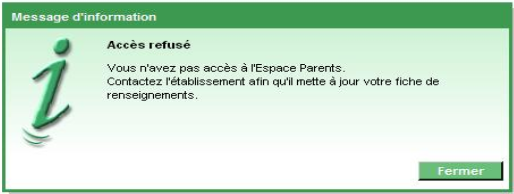
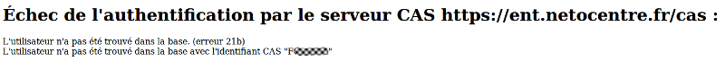
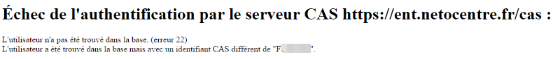

Cette page n'a pas vocation à remplacer la documentation officelle de pronote et le SAV d'Index Éducation, ici ne seront référencés que les problèmes connus et liés à l'accès à pronote dans l'ENT. Vos retours sur des problèmes rencontrés et leurs solutions sont les bienvenus afin d'en faire profiter tous les établissements.

Connectez vous avec le compte SPR avec le client pronote, ensuite dans l'onglet correspondant au type de personne (ici un parent) et pour le compte concerné, vérifiez que la colonne "Esp. p." est bien cochée, c'est ce qui permet d'autoriser les accès aux parents à l'espace parent de Pronote.

Pour corriger cette errent, connectez vous avec le compte SPR sur le client pronote. Dans l'onglet correspondant au type de personne et pour le compte concerné,
vérifiez la colonne "Identifiant CAS". Vous pouvez renseigner la valeur de la colonne par l'identifiant indiqué dans le message d'erreur,
ou insérer l'uid du compte ENT correspondant. Cela est documenté dans Gestion de l'
association des comptes ENT/Pronote.
À noter : s'il s'agit d'un Chef d'établissement, d'un CPE, etc...(un personnel autre qu'enseignant) il faudra vérifier dans la base pronote qu'un compte
nominatif correspondant existe dans la liste des personnels, en général dans la base pronote pour ce type de compte il n'est créé que des comptes
fonctionnel qui ne pourrons jamais être rattachés à un compte ENT du fait que les noms et prénoms ne correspondent pas.

Pour corriger cette erreur, connectez vous avec le compte SPR sur le client pronote, ensuite dans l'onglet correspondant au type de personne et
pour le compte concerné, vérifiez la colonne "Identifiant CAS". Vous pouvez renseigner la valeur de la colonne par l'identifiant indiqué dans le message d'erreur,
ou insérer l'uid du compte ENT correspondant. Cela est documenté dans Gestion de l'
association des comptes ENT/Pronote.
À noter : si cette erreur est observée, cela signifie que le compte ENT de la personne a été recréé et que cela est dû à une tâche administrative,
soit de l'établissement soit du rectorat. Pour un parent cela peut venir d'une définition de fratries, ou quand le compte de l'élève rattaché a été immatriculé,
ou que son dossier à été mis à jour suite à un changement d'établissement, cela entre le premier accès et le moment de l'erreur.
Si ce n'est pas le cas vérifiez auprès de votre administration pour savoir quel type de manipulation ont pu être effectuées dans SIECLE
afin d'éviter ce type de manipulation les prochaines fois (suppression du parent puis recréation par exemple), et surtout vérifiez s'il n'y a pas eu
d'autres manipulations de ce genre pouvant impacter d'autres comptes car il faudra sûrement effectuer la même manipulation dans pronote pour ces autres comptes.